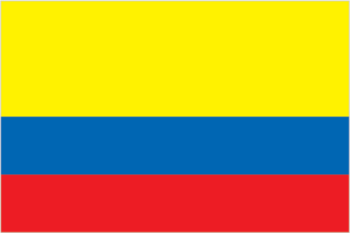
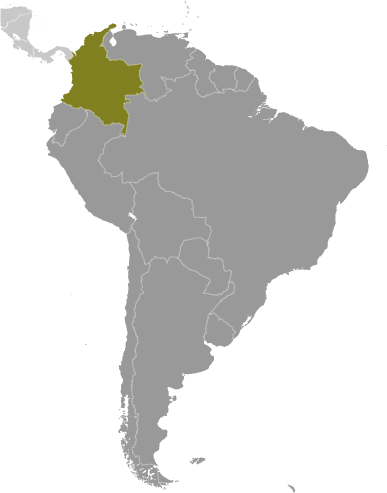
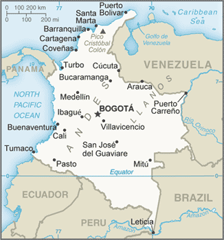

South America :: COLOMBIA
Introduction :: COLOMBIA
-
Colombia was one of the three countries that emerged after the dissolution of Gran Colombia in 1830 (the others are Ecuador and Venezuela). A decades-long conflict between government forces and antigovernment insurgent groups, principally the Revolutionary Armed Forces of Colombia (FARC) heavily funded by the drug trade, escalated during the 1990s. More than 31,000 former paramilitaries demobilized by the end of 2006 and the United Self Defense Forces of Colombia as a formal organization ceased to operate. In the wake of the paramilitary demobilization, organized criminal groups arose, whose members include some former paramilitaries. After four years of formal peace negotiations, the Colombian Government signed a revised final peace accord with the FARC in November 2016, which was subsequently ratified by the Colombian Congress. The accord calls for members of the FARC to demobilize, disarm, and reincorporate into society and politics, and it creates an alternative system for transitional justice that includes a “Special Jurisdiction for Peace” to address accountability for conflict-related crimes and established truth-telling mechanisms. The Colombian Government has stepped up efforts to reassert government control throughout the country, and now has a presence in every one of its administrative departments. Despite decades of internal conflict and drug related security challenges, Colombia maintains relatively strong democratic institutions characterized by peaceful, transparent elections and the protection of civil liberties.
Geography :: COLOMBIA
-
Northern South America, bordering the Caribbean Sea, between Panama and Venezuela, and bordering the North Pacific Ocean, between Ecuador and Panama4 00 N, 72 00 WSouth Americatotal: 1,138,910 sq kmland: 1,038,700 sq kmwater: 100,210 sq kmnote: includes Isla de Malpelo, Roncador Cay, and Serrana Bankcountry comparison to the world: 27slightly less than twice the size of Texastotal: 6,672 kmborder countries (5): Brazil 1,790 km, Ecuador 708 km, Panama 339 km, Peru 1,494 km, Venezuela 2,341 km3,208 km (Caribbean Sea 1,760 km, North Pacific Ocean 1,448 km)territorial sea: 12 nmexclusive economic zone: 200 nmcontinental shelf: 200-m depth or to the depth of exploitationtropical along coast and eastern plains; cooler in highlandsflat coastal lowlands, central highlands, high Andes Mountains, eastern lowland plains (Llanos)mean elevation: 593 melevation extremes: lowest point: Pacific Ocean 0 mhighest point: Pico Cristobal Colon 5,730 mnote: nearby Pico Simon Bolivar also has the same elevationpetroleum, natural gas, coal, iron ore, nickel, gold, copper, emeralds, hydropoweragricultural land: 37.5%arable land 1.4%; permanent crops 1.6%; permanent pasture 34.5%forest: 54.4%other: 8.1% (2011 est.)10,900 sq km (2012)the majority of people live in the north and west where agricultural opportunities and natural resources are found; the vast grasslands of the llanos to the south and east, which make up approximately 60% of the country, are sparsely populatedhighlands subject to volcanic eruptions; occasional earthquakes; periodic droughtsvolcanism: Galeras (4,276 m) is one of Colombia's most active volcanoes, having erupted in 2009 and 2010 causing major evacuations; it has been deemed a Decade Volcano by the International Association of Volcanology and Chemistry of the Earth's Interior, worthy of study due to its explosive history and close proximity to human populations; Nevado del Ruiz (5,321 m), 129 km (80 mi) west of Bogota, erupted in 1985 producing lahars (mudflows) that killed 23,000 people; the volcano last erupted in 1991; additionally, after 500 years of dormancy, Nevado del Huila reawakened in 2007 and has experienced frequent eruptions since then; other historically active volcanoes include Cumbal, Dona Juana, Nevado del Tolima, and Puracedeforestation; soil and water quality damage from overuse of pesticides; air pollution, especially in Bogota, from vehicle emissionsparty to: Antarctic Treaty, Biodiversity, Climate Change, Climate Change-Kyoto Protocol, Desertification, Endangered Species, Hazardous Wastes, Marine Life Conservation, Ozone Layer Protection, Ship Pollution, Tropical Timber 83, Tropical Timber 94, Wetlandssigned, but not ratified: Law of the Seaonly South American country with coastlines on both the North Pacific Ocean and Caribbean Sea
People and Society :: COLOMBIA
-
47,698,524 (July 2017 est.)country comparison to the world: 29noun: Colombian(s)adjective: Colombianmestizo and white 84.2%, Afro-Colombian (includes mulatto, Raizal, and Palenquero) 10.4%, Amerindian 3.4%, Romani <.01, unspecified 2.1% (2005 est.)Spanish (official)Roman Catholic 79%, Protestant 14% (includes Pentecostal 6%, mainline Protestant 2%, other 6%), other 2%, unspecified 5% (2014 est.)Colombia is in the midst of a demographic transition resulting from steady declines in its fertility, mortality, and population growth rates. The birth rate has fallen from more than 6 children per woman in the 1960s to just above replacement level today as a result of increased literacy, family planning services, and urbanization. However, income inequality is among the worst in the world, and more than a third of the population lives below the poverty line.Colombia experiences significant legal and illegal economic emigration and refugee outflows. Large-scale labor emigration dates to the 1960s; the United States and, until recently, Venezuela have been the main host countries. Emigration to Spain picked up in the 1990s because of its economic growth, but this flow has since diminished because of Spain’s ailing economy and high unemployment. Colombia has been the largest source of Latin American refugees in Latin America, nearly 400,000 of whom live primarily in Venezuela and Ecuador. Venezuela’s political and economic crisis since 2015, however, has created a reverse flow, consisting largely of Colombians returning home.Forced displacement continues to be prevalent because of violence among guerrillas, paramilitary groups, and Colombian security forces. Afro-Colombian and indigenous populations are disproportionately affected. Even with the Colombian Government’s December 2016 peace agreement with the Revolutionary Armed Forces of Colombia (FARC), the risk of displacement remains as other rebel groups fill the void left by the FARC. Between 1985 and September 2017, nearly 7.6 million persons have been internally displaced, the highest total in the world. These estimates may undercount actual numbers because many internally displaced persons are not registered. Historically, Colombia also has one of the world’s highest levels of forced disappearances. About 30,000 cases have been recorded over the last four decades—although the number is likely to be much higher—including human rights activists, trade unionists, Afro-Colombians, indigenous people, and farmers in rural conflict zones.Because of political violence and economic problems, Colombia received limited numbers of immigrants during the 19th and 20th centuries, mostly from the Middle East, Europe, and Japan. More recently, growth in the oil, mining, and manufacturing sectors has attracted increased labor migration; the primary source countries are Venezuela, the US, Mexico, and Argentina. Colombia has also become a transit area for illegal migrants from Africa, Asia, and the Caribbean who are en route to the US or Canada.0-14 years: 24.22% (male 5,917,425/female 5,634,516)15-24 years: 17.25% (male 4,191,033/female 4,038,314)25-54 years: 41.91% (male 9,918,698/female 10,071,419)55-64 years: 9.18% (male 2,059,712/female 2,318,320)65 years and over: 7.44% (male 1,480,966/female 2,068,121) (2017 est.)total dependency ratio: 45.6youth dependency ratio: 35.4elderly dependency ratio: 10.2potential support ratio: 9.8 (2015 est.)total: 30 yearsmale: 29 yearsfemale: 31 years (2017 est.)country comparison to the world: 1190.99% (2017 est.)country comparison to the world: 11716.1 births/1,000 population (2017 est.)country comparison to the world: 1145.5 deaths/1,000 population (2017 est.)country comparison to the world: 177-0.6 migrant(s)/1,000 population (2017 est.)country comparison to the world: 130the majority of people live in the north and west where agricultural opportunities and natural resources are found; the vast grasslands of the llanos to the south and east, which make up approximately 60% of the country, are sparsely populatedurban population: 77% of total population (2017)rate of urbanization: 1.47% annual rate of change (2015-20 est.)BOGOTA (capital) 9.765 million; Medellin 3.911 million; Cali 2.646 million; Barranquilla 1.991 million; Bucaramanga 1.215 million; Cartagena 1.092 million (2015)at birth: 1.06 male(s)/female0-14 years: 1.05 male(s)/female15-24 years: 1.04 male(s)/female25-54 years: 0.98 male(s)/female55-64 years: 0.88 male(s)/female65 years and over: 0.72 male(s)/femaletotal population: 0.98 male(s)/female (2016 est.)21.7 yearsnote: median age at first birth among women 25-29 (2015 est.)64 deaths/100,000 live births (2015 est.)country comparison to the world: 87total: 13.6 deaths/1,000 live birthsmale: 16.5 deaths/1,000 live birthsfemale: 10.6 deaths/1,000 live births (2017 est.)country comparison to the world: 106total population: 75.9 yearsmale: 72.8 yearsfemale: 79.3 years (2017 est.)country comparison to the world: 962 children born/woman (2017 est.)country comparison to the world: 12279.1% (2009/10)7.2% of GDP (2014)country comparison to the world: 761.57 physicians/1,000 population (2010)1.5 beds/1,000 population (2012)improved:urban: 96.8% of populationrural: 73.8% of populationtotal: 91.4% of populationunimproved:urban: 3.2% of populationrural: 26.2% of populationtotal: 8.6% of population (2015 est.)improved:urban: 85.2% of populationrural: 67.9% of populationtotal: 81.1% of populationunimproved:urban: 14.8% of populationrural: 32.1% of populationtotal: 18.9% of population (2015 est.)0.4% (2016 est.)country comparison to the world: 73120,000 (2016 est.)country comparison to the world: 372,800 (2016 est.)country comparison to the world: 44degree of risk: highfood or waterborne diseases: bacterial diarrheavectorborne diseases: dengue fever, malaria, and yellow fevernote: active local transmission of Zika virus by Aedes species mosquitoes has been identified in this country (as of August 2016); it poses an important risk (a large number of cases possible) among US citizens if bitten by an infective mosquito; other less common ways to get Zika are through sex, via blood transfusion, or during pregnancy, in which the pregnant woman passes Zika virus to her fetus (2016)22.3% (2016)country comparison to the world: 783.4% (2010)country comparison to the world: 1084.5% of GDP (2015)country comparison to the world: 95definition: age 15 and over can read and writetotal population: 94.2%male: 94.1%female: 94.4% (2015 est.)total: 14 yearsmale: 14 yearsfemale: 15 years (2015)total: 16.6%male: 12.6%female: 22.2% (2015 est.)country comparison to the world: 50
Government :: COLOMBIA
-
conventional long form: Republic of Colombiaconventional short form: Colombialocal long form: Republica de Colombialocal short form: Colombiaetymology: the country is named after explorer Christopher COLUMBUSpresidential republicname: Bogotageographic coordinates: 4 36 N, 74 05 Wtime difference: UTC-5 (same time as Washington, DC, during Standard Time)32 departments (departamentos, singular - departamento) and 1 capital district* (distrito capital); Amazonas, Antioquia, Arauca, Atlantico, Bogota*, Bolivar, Boyaca, Caldas, Caqueta, Casanare, Cauca, Cesar, Choco, Cordoba, Cundinamarca, Guainia, Guaviare, Huila, La Guajira, Magdalena, Meta, Narino, Norte de Santander, Putumayo, Quindio, Risaralda, Archipielago de San Andres, Providencia y Santa Catalina (colloquially San Andres y Providencia), Santander, Sucre, Tolima, Valle del Cauca, Vaupes, Vichada20 July 1810 (from Spain)Independence Day, 20 July (1810)several previous; latest promulgated 5 July 1991; amended many times, last in 2015 (2016)civil law system influenced by the Spanish and French civil codeshas not submitted an ICJ jurisdiction declaration; accepts ICCt jurisdictioncitizenship by birth: nocitizenship by descent only: least one parent must be a citizen or permanent resident of Colombiadual citizenship recognized: yesresidency requirement for naturalization: 5 years18 years of age; universalchief of state: President Juan Manuel SANTOS Calderon (since 7 August 2010); Vice President Ret. Gen. Oscar Adolfo NARANJO Trujillo (since 30 March 2017); note - Vice President German VARGAS Lleras' resignation on 15 March 2017 became effective on 21 March 2017; the president is both chief of state and head of governmenthead of government: President Juan Manuel SANTOS Calderon (since 7 August 2010); Vice President Ret. Gen. Oscar Adolfo NARANJO Trujillo (since 30 March 2017)cabinet: Cabinet appointed by the presidentelections/appointments: president directly elected by absolute majority vote in 2 rounds if needed for a 4-year term; election last held on 25 May 2014 with a runoff held on 15 June 2014 (next to be held on 27 May 2018); note - recent political reform eliminated presidential reelection; beginning in 2018, presidents can only serve one 4-year termelection results: Juan Manuel SANTOS Calderon reelected president in runoff; percent of vote - Juan Manuel SANTOS Calderon (U Party) 51.0%, Oscar Ivan ZULUAGA (CD) 45.0%, other 4.0%description: bicameral Congress or Congreso consists of the Senate or Senado (102 seats; 100 members elected in a single nationwide constituency by party-list proportional representation popular vote and 2 members elected in a special nationwide for indigenous communities to serve 4-year terms) and the Chamber of Representatives or Camara de Representantes (166 seats; members elected in multi-seat constituencies by party-list proportional representation constituency popular vote to serve 4-year terms)elections: Senate - last held on 9 March 2014 (next to be held in March 2018); Chamber of Representatives - last held on 9 March 2014 (next to be held in March 2018)election results: Senate - percent of vote by party - NA; seats by party - U Party 21, CD 20, PC 18, PL 17, CR 9, PDA 5, Green Party 5, other 7; Chamber of Representatives - percent of vote by party - NA; seats by party - PL 39, U Party 37, PC 27, CD 19, CR 16, Green Party 6, PDA 3, other 19highest court(s): Supreme Court of Justice or Corte Suprema de Justicia (consists of the Civil-Agrarian and Labor Chambers each with 7 judges, and the Penal Chamber with 9 judges); Constitutional Court (consists of 9 magistrates); Council of State (consists of 31 members); Superior Judiciary Council (consists of 13 magistrates)judge selection and term of office: Supreme Court judges appointed by the Supreme Court members from candidates submitted by the Superior Judiciary Council; judges elected for individual 8-year terms; Constitutional Court magistrates - nominated by the president, by the Supreme Court, and elected by the Senate; judges elected for individual 8-year terms; Council of State members appointed by the State Council plenary from lists nominated by the Superior Judiciary Councilsubordinate courts: Superior Tribunals (appellate courts for each of the judicial districts); regional courts; civil municipal courts; Superior Military Tribunal; first instance administrative courtsAlternative Democratic Pole or PDA [Clara LOPEZ]Conservative Party or PC [David BARGUIL]Democratic Center Party or CD [Alvaro URIBE Velez, Oscar Ivan ZULUAGA, Carlos HOLMES TRUJILLO, Ivan DUQUE]Green Alliance [Jorge LONDONO, Antonio SANGUINO, Luis AVELLANEDA, Camilo ROMERO]Liberal Party or PL [Horacio SERPA]Citizens Option (Opcion Ciudadana) or OC [Angel ALIRIO Moreno] (formerly known as the National Integration Party or PIN)Radical Change or CR [Carlos Fernando GALAN]Social National Unity Party or U Party [Roy BARRERAS, Jose David NAME]note: Colombia has numerous smaller movementsCentral Union of Workers or CUTColombian Confederation of Workers or CTCGeneral Confederation of Workers or CGTNational Liberation Army or ELNBCIE, BIS, CAN, Caricom (observer), CD, CDB, CELAC, EITI (candidate country), FAO, G-3, G-24, G-77, IADB, IAEA, IBRD, ICAO, ICC (national committees), ICCt, ICRM, IDA, IFAD, IFC, IFRCS, IHO, ILO, IMF, IMO, IMSO, Interpol, IOC, IOM, IPU, ISO, ITSO, ITU, ITUC (NGOs), LAES, LAIA, Mercosur (associate), MIGA, NAM, OAS, OPANAL, OPCW, Pacific Alliance, PCA, UN, UNASUR, UNCTAD, UNESCO, UNHCR, UNIDO, Union Latina, UNWTO, UPU, WCO, WFTU (NGOs), WHO, WIPO, WMO, WTOchief of mission: Ambassador Camilo REYES Rodriguez (since 21 July 2017)chancery: 2118 Leroy Place NW, Washington, DC 20008telephone: [1] (202) 387-8338FAX: [1] (202) 232-8643consulate(s) general: Atlanta, Houston, Los Angeles, Miami, New York, Newark (NJ), Orlando, San Juan (Puerto Rico)consulate(s): Boston, Chicago, San Franciscochief of mission: Ambassador Kevin WHITAKER (since 11 June 2014)embassy: Calle 24 Bis No. 48-50, Bogota, D.C.mailing address: Carrera 45 No. 24B-27, Bogota, D.C.telephone: [57] (1) 275-2000FAX: [57] (1) 275-4600three horizontal bands of yellow (top, double-width), blue, and red; the flag retains the three main colors of the banner of Gran Colombia, the short-lived South American republic that broke up in 1830; various interpretations of the colors exist and include: yellow for the gold in Colombia's land, blue for the seas on its shores, and red for the blood spilled in attaining freedom; alternatively, the colors have been described as representing more elemental concepts such as sovereignty and justice (yellow), loyalty and vigilance (blue), and valor and generosity (red); or simply the principles of liberty, equality, and fraternitynote: similar to the flag of Ecuador, which is longer and bears the Ecuadorian coat of arms superimposed in the centerAndean condor; national colors: yellow, blue, redname: "Himno Nacional de la Republica de Colombia" (National Anthem of the Republic of Colombia)lyrics/music: Rafael NUNEZ/Oreste SINDICInote: adopted 1920; the anthem was created from an inspirational poem written by President Rafael NUNEZ
Economy :: COLOMBIA
-
Colombia’s economy benefits from free trade and sound fiscal policies but it has slowed in 2016 because of falling global oil prices, a strong dollar, and moderate inflation. Colombia heavily depends on energy and mining exports, making it vulnerable to a drop in commodity prices. Colombia is the world's fourth largest coal exporter, the world’s second largest coffee and cut flowers exporter, and Latin America’s fourth largest oil producer. Economic development is hampered by inadequate infrastructure, poverty, narcotrafficking, and an uncertain security situation.Although real GDP growth averaged 4.7% for the past decade, growth fell to 2.0% in 2016. The El Nino weather pattern in early 2016 and a 40-day truckers strike caused food and energy prices to rise, with inflation spiking to a high of nearly 9% in July 2016. Declining oil prices have reduced government revenues. Colombia received about $1 billion in oil revenue in 2016, compared with $6 billion in 2014; oil accounts for 20% of government revenues. President Juan Manuel SANTOS signed into law a tax reform bill in December 2016 aimed at offsetting lost revenue from the drop in oil prices by decreasing corporate taxes to incentivize investment and by increasing the value added tax. The enactment of the tax reform bill was key to maintaining Colombia’s BBB investment-grade credit rating. Foreign investment has been hampered by Colombia’s struggle to address its fiscal problems. As of September 2016, FDI in Colombia had risen to $10.2 billion, up from $9.3 billion over the same period in 2015.Colombia has signed or is negotiating Free Trade Agreements (FTA) with more than a dozen countries; the US-Colombia FTA went into force in May 2012. The US and Colombia have benefitted from the FTA, but Colombia’s ability to take full advantage of its enhanced access to American markets continues to be constrained by lack of export diversification. Non-tariff measures remain a point of contention for bilateral trade relations. The Colombian government acted in 2016 to address several bilateral trade irritants with the US, including truck scrappage, distilled spirits, pharmaceuticals, ethanol imports, and labor rights. US and industry stakeholders are still evaluating the implementation of recent reforms. Colombia is a founding member of the Pacific Alliance - a regional trade block formed in 2012 by Chile, Colombia, Mexico, and Peru to promote regional trade and economic integration. In 2013, Colombia began its accession process to the Organization for Economic Cooperation and Development.$688.6 billion (2016 est.)$666.9 billion (2015 est.)$640.2 billion (2014 est.)note: data are in 2016 dollarscountry comparison to the world: 32$282.4 billion (2016 est.)2% (2016 est.)3.1% (2015 est.)4.4% (2014 est.)country comparison to the world: 131$14,100 (2016 est.)$14,000 (2015 est.)$13,800 (2014 est.)note: data are in 2016 dollarscountry comparison to the world: 11221% of GDP (2016 est.)20.3% of GDP (2015 est.)21.1% of GDP (2014 est.)country comparison to the world: 81household consumption: 62.8%government consumption: 18.4%investment in fixed capital: 25.3%investment in inventories: 0.2%exports of goods and services: 14.1%imports of goods and services: -20.6% (2016 est.)agriculture: 7.1%industry: 32.6%services: 60.3% (2016 est.)coffee, cut flowers, bananas, rice, tobacco, corn, sugarcane, cocoa beans, oilseed, vegetables; shrimp; forest productstextiles, food processing, oil, clothing and footwear, beverages, chemicals, cement; gold, coal, emeralds0.6% (2016 est.)country comparison to the world: 15024.41 million (2016 est.)country comparison to the world: 26agriculture: 17%industry: 21%services: 62% (2011 est.)9.2% (2016 est.)8.9% (2015 est.)country comparison to the world: 12027.8% (2015 est.)lowest 10%: 1.1%highest 10%: 42.2% (2014 est.)53.5 (2014)56.9 (1996)country comparison to the world: 10revenues: $75.9 billionexpenditures: $82.73 billion (2016 est.)26.9% of GDP (2016 est.)country comparison to the world: 104-2.4% of GDP (2016 est.)country comparison to the world: 9952% of GDP (2016 est.)50.2% of GDP (2015 est.)note: data cover general government debt, and includes debt instruments issued (or owned) by government entities other than the treasury; the data include treasury debt held by foreign entities; the data include debt issued by subnational entitiescountry comparison to the world: 94calendar year7.5% (2016 est.)5% (2015 est.)country comparison to the world: 1937.5% (31 December 2016)6.5% (31 December 2014)country comparison to the world: 4414.65% (31 December 2016 est.)11.45% (31 December 2015 est.)country comparison to the world: 46$34.01 billion (31 December 2016 est.)$32.82 billion (31 December 2015 est.)country comparison to the world: 60$136 billion (31 December 2016 est.)$121.2 billion (31 December 2015 est.)country comparison to the world: 51$153.1 billion (31 December 2016 est.)$133.8 billion (31 December 2015 est.)country comparison to the world: 49$85.96 billion (31 December 2015 est.)$146.7 billion (31 December 2014 est.)$202.7 billion (31 December 2013 est.)country comparison to the world: 42$-12.24 billion (2016 est.)$-18.64 billion (2015 est.)country comparison to the world: 186$33.38 billion (2016 est.)$38.28 billion (2015 est.)country comparison to the world: 57petroleum, coal, emeralds, coffee, nickel, cut flowers, bananas, apparelUS 33.5%, Panama 6.3% (2016)$43.24 billion (2016 est.)$52.05 billion (2015 est.)country comparison to the world: 52industrial equipment, transportation equipment, consumer goods, chemicals, paper products, fuels, electricityUS 26.4%, China 19.1%, Mexico 7.5%, Brazil 4.7% (2016)$46.18 billion (31 December 2016 est.)$46.22 billion (31 December 2015 est.)country comparison to the world: 40$115 billion (31 December 2016 est.)$111.1 billion (31 December 2015 est.)country comparison to the world: 47$164.3 billion (31 December 2016 est.)$149.2 billion (31 December 2015 est.)country comparison to the world: 33$51.82 billion (31 December 2016 est.)$47.3 billion (31 December 2015 est.)country comparison to the world: 42Colombian pesos (COP) per US dollar -3,055.3 (2016 est.)3,055.3 (2015 est.)2,001 (2014 est.)2,001.1 (2013 est.)1,798 (2012 est.)
Energy :: COLOMBIA
-
population without electricity: 1,200,000electrification - total population: 97%electrification - urban areas: 100%electrification - rural areas: 88% (2013)67.26 billion kWh (2015 est.)country comparison to the world: 4157.6 billion kWh (2015 est.)country comparison to the world: 45460 million kWh (2015 est.)country comparison to the world: 7045 million kWh (2015 est.)country comparison to the world: 10516.66 million kW (2015 est.)country comparison to the world: 4929.4% of total installed capacity (2015 est.)country comparison to the world: 1860% of total installed capacity (2015 est.)country comparison to the world: 7069% of total installed capacity (2015 est.)country comparison to the world: 191.6% of total installed capacity (2015 est.)country comparison to the world: 128886,000 bbl/day (2016 est.)country comparison to the world: 22681,900 bbl/day (2014 est.)country comparison to the world: 190 bbl/day (2014 est.)country comparison to the world: 1122.002 billion bbl (1 January 2017 es)country comparison to the world: 37362,100 bbl/day (2014 est.)country comparison to the world: 39345,000 bbl/day (2015 est.)country comparison to the world: 4083,920 bbl/day (2014 est.)country comparison to the world: 4495,790 bbl/day (2014 est.)country comparison to the world: 5911.91 billion cu m (2015 est.)country comparison to the world: 3918.82 billion cu m (2015 est.)country comparison to the world: 44400 million cu m (2015 est.)country comparison to the world: 450 cu m (2013 est.)country comparison to the world: 110123.5 billion cu m (1 January 2017 es)country comparison to the world: 5174 million Mt (2013 est.)country comparison to the world: 49
Communications :: COLOMBIA
-
total subscriptions: 7,115,984subscriptions per 100 inhabitants: 15 (July 2016 est.)country comparison to the world: 24total: 58,684,924subscriptions per 100 inhabitants: 124 (July 2016 est.)country comparison to the world: 28general assessment: modern system in many respects with a nationwide microwave radio relay system, a domestic satellite system with 41 earth stations, and a fiber-optic network linking 50 cities; multiple providers of both fixed-line and mobile-cellular services, however, infrastructure remains poor in small urban centers and rural areasdomestic: fixed-line connections stand at about 15 per 100 persons; mobile cellular telephone subscribership is about 120 per 100 persons; competition among cellular service providers is resulting in falling local and international calling rates and contributing to the steep decline in the market share of fixed-line servicesinternational: country code - 57; multiple submarine cable systems provide links to the US, parts of the Caribbean, and Central and South America; satellite earth stations - 10 (6 Intelsat, 1 Inmarsat, 3 fully digitalized international switching centers) (2016)combination of state-owned and privately owned broadcast media provide service; more than 500 radio stations and many national, regional, and local TV stations (2007).cototal: 27,452,550percent of population: 58.1% (July 2016 est.)country comparison to the world: 25
Transportation :: COLOMBIA
-
number of registered air carriers: 12inventory of registered aircraft operated by air carriers: 157annual passenger traffic on registered air carriers: 30,742,928annual freight traffic on registered air carriers: 1,317,562,271 mt-km (2015)HJ, HK (2016)836 (2013)country comparison to the world: 8total: 121over 3,047 m: 22,438 to 3,047 m: 91,524 to 2,437 m: 39914 to 1,523 m: 53under 914 m: 18 (2017)total: 715over 3,047 m: 11,524 to 2,437 m: 25914 to 1,523 m: 201under 914 m: 488 (2013)3 (2013)gas 4,991 km; oil 6,796 km; refined products 3,429 km (2013)total: 2,141 kmstandard gauge: 150 km 1.435-m gaugenarrow gauge: 1,991 km 0.914-m gauge (2015)country comparison to the world: 70total: 204,855 km (2015)country comparison to the world: 2524,725 km (18,300 km navigable; the most important waterway, the River Magdalena, of which 1,488 km is navigable, is dredged regularly to ensure safe passage of cargo vessels and container barges) (2012)country comparison to the world: 6total: 12by type: cargo 9, chemical tanker 1, petroleum tanker 2registered in other countries: 4 (Antigua and Barbuda 1, Panama 2, Portugal 1) (2010)country comparison to the world: 105major seaport(s): Atlantic Ocean (Caribbean) - Cartagena, Santa Marta, Turbo; Pacific Ocean - Buenaventurariver port(s): Barranquilla (Rio Magdalena)oil terminal(s): Covenas offshore terminaldry bulk cargo port(s): Puerto Bolivar (coal)container port(s) (TEUs): Cartagena (1,853,342)
Military and Security :: COLOMBIA
-
3.39% of GDP (2016)3.13% of GDP (2015)3.13% of GDP (2014)3.29% of GDP (2013)3.17% of GDP (2012)country comparison to the world: 17National Army (Ejercito Nacional), Republic of Colombia Navy (Armada Republica de Colombia, ARC, includes Naval Aviation, Naval Infantry (Infanteria de Marina, IM), and Coast Guard), Colombian Air Force (Fuerza Aerea de Colombia, FAC) (2012)18-24 years of age for compulsory and voluntary military service; service obligation is 18 months (2012)
Transnational Issues :: COLOMBIA
-
in December 2007, ICJ allocated San Andres, Providencia, and Santa Catalina islands to Colombia under 1928 Treaty but did not rule on 82 degrees W meridian as maritime boundary with Nicaragua; managed dispute with Venezuela over maritime boundary and Venezuelan-administered Los Monjes Islands near the Gulf of Venezuela; Colombian-organized illegal narcotics, guerrilla, and paramilitary activities penetrate all neighboring borders and have caused Colombian citizens to flee mostly into neighboring countries; Colombia, Honduras, Nicaragua, Jamaica, and the US assert various claims to Bajo Nuevo and Serranilla BankIDPs: 7,582,085 (conflict between government and illegal armed groups and drug traffickers since 1985; about 300,000 new IDPs each year since 2000) (2017)stateless persons: 11 (2016)illicit producer of coca, opium poppy, and cannabis; world's leading coca cultivator with 159,000 hectares in coca cultivation in 2015, a 42% increase over 2014, producing a potential of 495 mt of pure cocaine; the world's largest producer of coca derivatives; supplies cocaine to nearly all of the US market and the great majority of other international drug markets; in 2016, the Colombian government reported manual eradication of 17,642 hectares; Colombia suspended aerial eradication in October 2015 making 2016 the first full year without aerial eradication; a significant portion of narcotics proceeds are either laundered or invested in Colombia through the black market peso exchange; Colombia probably remains the second largest supplier of heroin to the US market; opium poppy cultivation was estimated to be 1,100 hectares in 2015, sufficient to potentially produce three metric tons of pure heroin